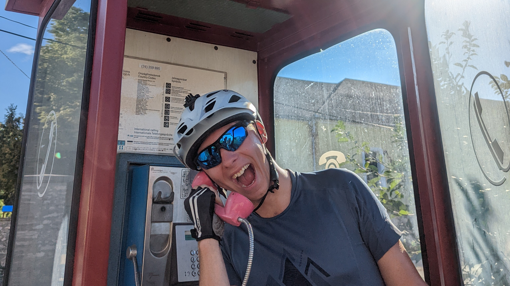
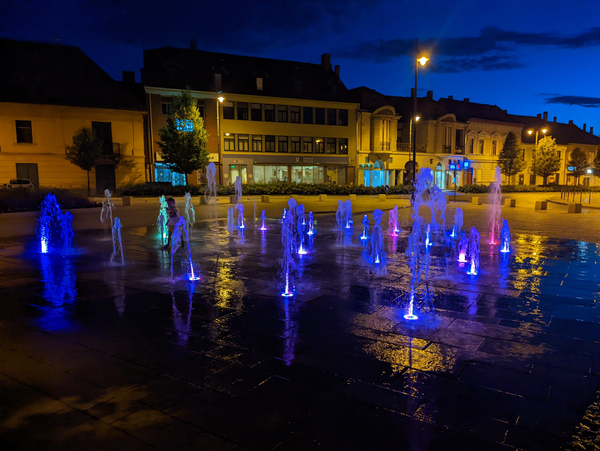
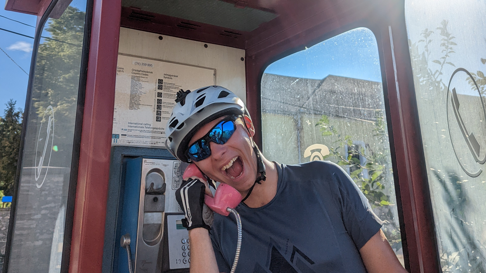
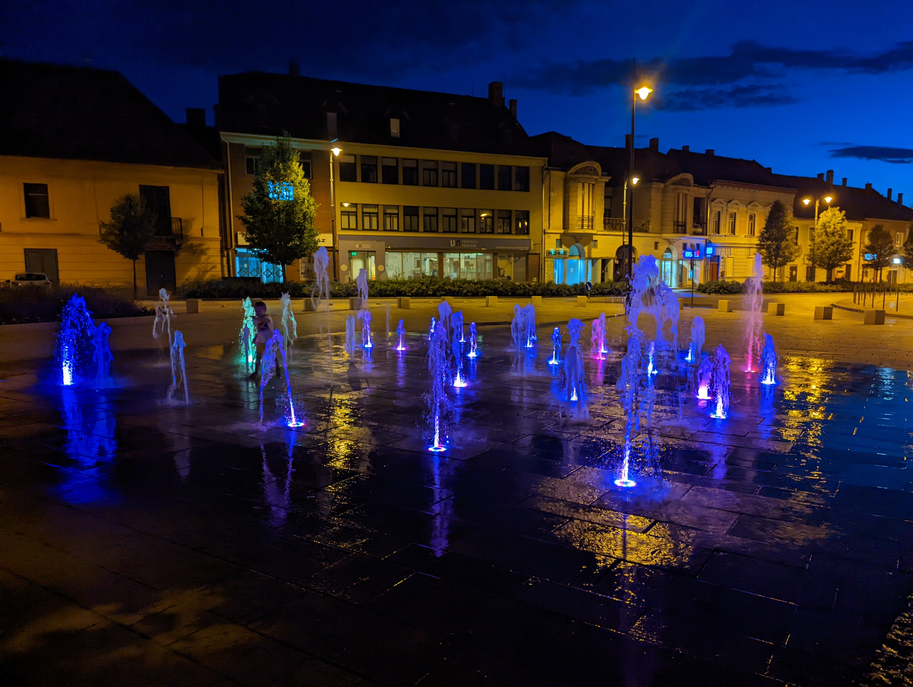

Kam sa to trepeme, veď bazén máme aj doma
Štúrovo -> Pápa (148km)
Štúrovo -> Pápa (148km)
Zobudili sme sa po 5 a pol hodinách do pomerne sychravého a chladného rána, čo znamená, že naša cesta plná utrpenia sa môže pokojne započať. Malou útechou a pravdepodobne poslednou pripomienkou civilizácie na minimálne ďalších pár dní boli naše raňajky, ktoré pozostávali z vajíčok, rožka, šunky a kávy, jedlo šampiónov... Následne sme osedlali naše kravy (bicykle) a vydali sme sa na strastiplnú púť levickými ulicami smerom k železničnej stanici, nasledujúca zastávka Štúrovo. Keď sme celý zadychčaní dorazili k stanici, vedeli sme, že toto bude poriadna jazda. Po príchode do Štúrova sme zistili, že nebude inej možnosti ako bicykle, ktoré s nákladom našich osobných vecí pomaly zniesť a opäť vytlačiť schodmi, nakoľko inej možnosti na tejto stanici nie je. No krátko po opustení mesta Štúrovo sme sa napojili na perfektnú cyklotrasu pozdĺž Dunaja vrámci európskych cyklistických trás Eurovelo, ktorá trvala až do prvej zastávky dnešného dňa, Komárna. Cesta bola pomerne bezproblémová, užívali sme si chladný vzduch, vanúci od majestátneho Dunaja a pokoj od rušných ciest plných aut. Podchvíľou sme sledovali prebiehajúci archeologický výskum jednej z pevností Limes Romanus a opäť pokračovali v našej ceste. V Komárne sme sa dosýta naobedovali a prekročili hranice. Je to tu, naša cesta svetom sa oficiálne začala. Hneď po prejdení mesta Komárom sme zistili, že naša navigácia pomerne zavádza, ukazovala, že ideme po cyklotrase, ale žiadna cyklotrasa v dohľade nebola. S nádejou, že sa nejaká po ďalšom kilometri vynorí sme ale napredovali, po 30 kilometroch sme si uvedomili, že to asi tak nebude. Každú chvíľu okolo nás prefrčiavali nákladné autá a kamióny. Avšak aj napriek tejto nepríjemnosti sme si dokázali uchovať spontánneho ducha a keď sme uvideli ceduľu čítajúcu Gelato, vedeli sme, že je čas na sladkú prestávku. Fotografia uvedená nižšie :D Ako sme si predierali cestu maďarským vidiekom a verte mi, nie vždy to bolo ľahké, narazili sme na výstavbu novej cesty. Dopravu sa snažil riadiť jemne zavalitý pán, s fúzami až po uši a vysielačkou v ruke. Patrícia, ktorá išla predo mnou si ho nevšimla a on zlostne začal vykrikovať v jazyku, ktorý nám bol pomerne nezrozumiteľný. Patrícia promptne zastavila a daný pán sa hodil s nami ihneď do reči. Okamžite som ho informoval, že po maďarsky bohužiaľ nevieme, čo mu však neprekážalo v komunikácii pokračovať, a tak mne nezostávalo nič iné len pristúpiť na interlinguálnu húsenkovú dráhu plnú znakového jazyka a jasnovidectva, z čoho však nakoniec vyplynulo, že si perfektne rozumieme. Patrícia len z opodiaľky sledovala nastalú scenériu a nechápala, čo sa to vlastne deje, keď som jej následne vysvetľoval, o čom sme sa to bavili, čudovala sa dvakrát. Čím hlbšie sme v Maďarsku boli, tým bolo citeľnejšie, že ľudia tu žijú pomerne jednoduchšie ako sme zvyknutí, akoby sa tu zastavil čas. Mestá vyzerajú ako scenérie vytrhnuté z pohľadníc slovenských miest zo začiatku minulého storočia, o dedinách ani nevraviac. Sprvu, keď sme narazili na telefónnu búdku, tak sme si mysleli, že to tu určite len niekto zabudol odstrániť a aké je to retro, to sme však ešte nevedeli, že v týchto končinách je to úplne bežné. Zvyšok cesty prebiehal pomerne v pokoji až na pár miestnych vzdelancov, ktorí spoza svojich volantov ako zmyslov zbavení trieskali po svojich klaksónoch, či už z čírej nenávisti voči cyklistom, zábavy alebo iného dôvodu, to sa však ale už asi nikdy nedozvieme. Tak ako sme si po minutí mesta Kisbér hovorili, že dnes to do Pápy určite nestihneme, zabookovali sme si tam predsa len hotel a z toho dôvodu nám nezostávalo nič iné, než sa tam cez všetky ťažkosti a bolesti predsa len dostať. Do našej destinácie sme s maximálnym vyčerpaním došli okolo pol deviatej večer. Nevládali sme ani chodiť, nie to bicyklovať, a preto sme urobili to najrozumnejšie čo sa dá v tejto situácii robiť, osprchovali sme sa, obliekli a vyrazili do nočného mesta. Pápa má krásne historické centrum a taktiež úžasné reštaurácie... Vraj. O tom druhom sme sa presvedčiť nemohli, lebo jediná reštaurácia, v ktorej varili ešte po 9tej hodine bola vyhlásená reštaurácia Mcdonald's. A tak teda po výdatnej večeri v nóbl reštaurácii sme sa pomaly vrátili do našej izby a rozhodli sa, že na dnešný deň by už aj stačilo, ponatierali sme sa rôznymi liečivými krémami žaby mastičkárky a ubolení ľahli k zaslúženému odpočinku. Deň prvý, prežili sme.


 


